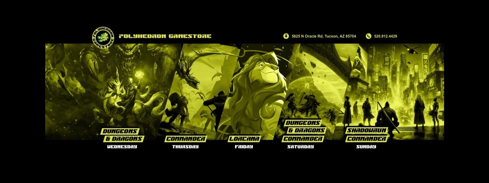

Colors
Locked color philosophy first, then faction expression—without drifting into commander-specific execution.
Color and faction identity are system layers. They describe what a color offers before any one archetype or deck uses that permission in a specific way.
In Magic: the Gathering, White represents structure, order, and the pursuit of stability through rules, balance, and disciplined play.
See how this identity is expressed through four different postures without changing the color’s core philosophy.


In Magic: the Gathering, Blue represents knowledge, control, and the pursuit of advantage through information, timing, and precision. It excels at shaping the game through understanding, positioning, and the careful use of resources over time.
See how this identity is expressed through four different postures without changing the color’s core philosophy.


In Magic: the Gathering, Black represents ambition, sacrifice, and the pursuit of power through any available means. It excels at converting resources into advantage, often trading life, cards, or board presence to achieve a greater outcome.
See how this identity is expressed through four different postures without changing the color’s core philosophy.


In Magic: the Gathering, Red represents speed, emotion, and the pursuit of action through impulse and momentum. It excels at applying pressure, forcing decisions, and accelerating the pace of the game to create advantage.
See how this identity is expressed through four different postures without changing the color’s core philosophy.


In Magic: the Gathering, Green represents growth, inevitability, and the pursuit of strength through natural development. It excels at building overwhelming presence over time by expanding resources and reinforcing its position on the board.
See how this identity is expressed through four different postures without changing the color’s core philosophy.


Boros combines white’s discipline with red’s momentum. It rewards players who turn initiative into a real clock and use structure to make pressure harder to answer cleanly.


Azorius combines white’s order with blue’s precision. It rewards players who value timing, control of pace, and turning disciplined play into a long-term positional advantage.


Dimir combines blue’s information with black’s leverage. It rewards players who value hidden angles, selective pressure, and using asymmetry to make ordinary exchanges favor them.


Orzhov combines white’s structure with black’s extraction. It rewards players who value stable pressure, recurring material, and making every exchange tax the opponent twice.


Rakdos combines black’s ruthlessness with red’s speed. It rewards players who are willing to convert resources into immediate stress and punish tables that stumble.


Golgari combines black’s recursion with green’s growth. It rewards players who value inevitability, material recycling, and board states that become harder to exhaust over time.


Izzet combines blue’s experimentation with red’s velocity. It rewards players who see sequencing as a weapon and can turn one small edge into a whole turn of advantage.


Selesnya combines green’s growth with white’s discipline. It rewards players who build board states that are both resilient and coordinated, then convert them into durable pressure.


Simic combines green’s scale with blue’s refinement. It rewards players who build resources efficiently and then turn that development into engines that are difficult to contest.


Gruul combines red’s momentum with green’s force. It rewards players who value immediate pressure backed by scale and want their battlefield to create structural urgency quickly.


Five-color play represents total access and total responsibility. It rewards players who can manage broad access to tools without losing sequencing discipline, role clarity, or timing.